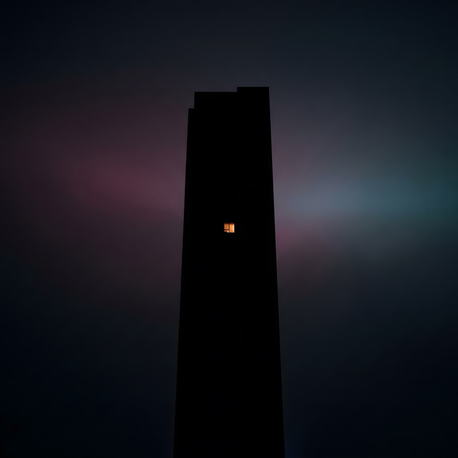

Night Shift is a six-track record. 80s electro-funk, freestyle, pop-R&B, and synthwave boom-bap, run through modern hiphop drum programming, with one female voice carrying all of it.1 It’s Act II of THE EXIT, the series that started with Parallels, and it’s about the shift that starts when everyone else clocks out.
I wanted to play and make it, so I did. A lot of what I make comes from the late-night hours, and this record is about them.
Where It Came From
Late at night something sparks, and I follow it. It starts as play and experimentation. Then it clicks, and there’s no off switch.
All my creations are, in some ways, telling my stories, and the lead vocalist is no exception: a character, and an extension of me. She’s also the kind of voice I listen to most: R&B, alt-R&B, and neo-soul are the core of my Last.fm history, and most of my top artists are women.
I started with three tracks: the wait, the peak, the morning after. The experimenting was where the fun and joy were, and it kept sparking new ideas, but the story still felt incomplete. With no track standing behind the peak, the record risked becoming a song about grinding. So I added the crash (“Quarter Past Three”), a coda for the morning (“Daylight”), and the ramp-up before the peak (“Spark”). Each one was a gap I felt.
The Tracklist
- The hours before: The wait, in a quiet house. “This is the hour I don’t talk about.”
- Spark: The ramp-up, before it’s a problem. “Found a thread nobody asked me to pull.”
- No Off Switch: The peak, and what it costs. “Every good thing I’ve made came out of a night like this.”
- Quarter Past Three: The crash. Cold, stark, unresolved. “Burned, not broken.”
- Choosing it anyway: Morning-after clarity. Consent, not victory. “I have a life, it just runs on a different clock.”
- Daylight: Joy that isn’t tied to any win. The hook-out carries a line over from track 5. “Hands up—nobody’s watching.” / “Not because I have to.”
Listen
Listen to the Night Shift playlist on YouTube.
1 Vocals and instruments: Suno v5 through 1MinAI, and I pick the takes. Cover art: Google’s AI image tools. Lyrics: a back and forth with Claude, which wrote the first draft of each track from my direction. ↩